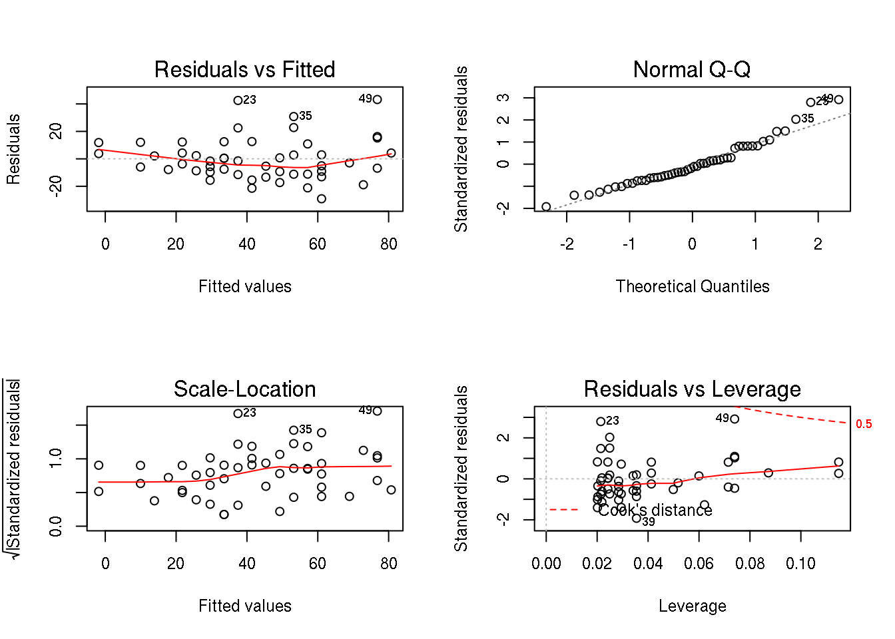
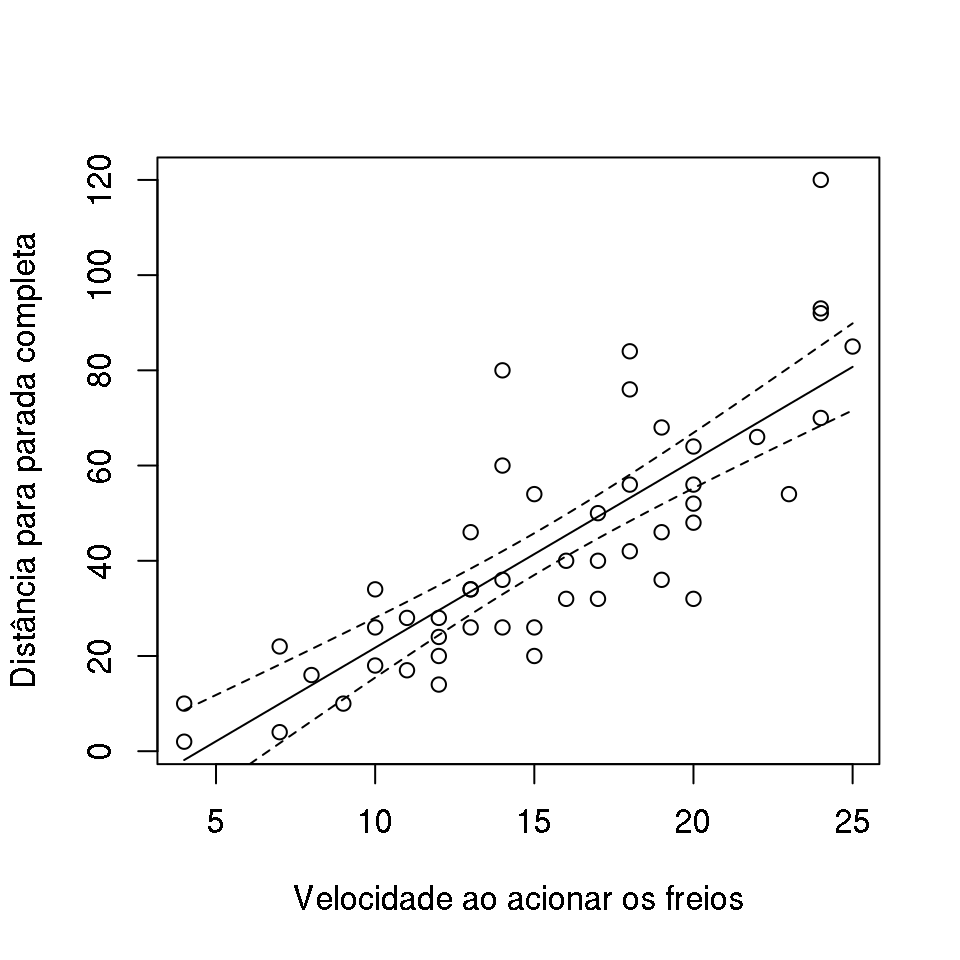

Abaixo tem-se o ajuste do modelo de regressão linear simples
\[ Y = \beta_0 + \beta_1 x + \epsilon \]
para dados de distância para parada completa de um veículo em função da velocidade no instante de acionamento dos freios. Esse conjunto de dados está objeto cars.
Um resumo dos dados pode ser visto na tabela abaixo:
| speed | dist | |
|---|---|---|
| Min. : 4.0 | Min. : 2.00 | |
| 1st Qu.:12.0 | 1st Qu.: 26.00 | |
| Median :15.0 | Median : 36.00 | |
| Mean :15.4 | Mean : 42.98 | |
| 3rd Qu.:19.0 | 3rd Qu.: 56.00 | |
| Max. :25.0 | Max. :120.00 |
Os parâmetros do modelo linear podem ser obtidos pela função lm(), como pode ser visto abaixo
## Ajuste do modelo
mod <- lm(dist ~ speed, data = cars)Um resumo do ajuste do modelo pode ser visualizado abaixo
## Resumo do modelo
summary(mod)
Call:
lm(formula = dist ~ speed, data = cars)
Residuals:
Min 1Q Median 3Q Max
-29.069 -9.525 -2.272 9.215 43.201
Coefficients:
Estimate Std. Error t value Pr(>|t|)
(Intercept) -17.5791 6.7584 -2.601 0.0123 *
speed 3.9324 0.4155 9.464 1.49e-12 ***
---
Signif. codes: 0 '***' 0.001 '**' 0.01 '*' 0.05 '.' 0.1 ' ' 1
Residual standard error: 15.38 on 48 degrees of freedom
Multiple R-squared: 0.6511, Adjusted R-squared: 0.6438
F-statistic: 89.57 on 1 and 48 DF, p-value: 1.49e-12Antes de interpretar o modelo e fazer inferência, é importante que sejam verificados os pressupostos considerados através da análise dos resíduos.
Por padrão se fizermos um plot() no modelo, temos os seguintes gráficos para avliar os resíduos:
plot(mod)
Assumindo que o ajuste do modelo está adequado, pode-se obter o gráfico dos valores preditos sobre o diagrama de dispersão dos valores observados.
## Intervalo de valores para predição
pred <- data.frame(speed = seq(4, 25, by = 0.5))
## Valores preditos
ypred <- predict(mod, newdata = pred, interval = "confidence")
## Inclui valores preditos no data frame
pred <- cbind(pred, ypred)Agora podemos visualizar o modelo ajustado aos dados
## Gráfico de dispersão
plot(dist ~ speed, data = cars,
xlab = "Velocidade ao acionar os freios",
ylab = "Distância para parada completa")
## Intervalo de predição
with(pred,
matlines(x = speed, y = cbind(fit, lwr, upr),
lty = c(1, 2, 2), col = 1))
O parâmetro \(\beta_1\) desse modelo de regressão linear simples é 3.9324088.
Separe multiplas citações com ;, por exemplo (Buckland et al. 2004; Valpine 2004).
Você pode adicionar comentários arbitrários dentro do colchetes, como por exemplo (veja Durbin and Koopman 1997, 33–35; e Kitagawa 1987, cap. 1).
Remova os colchetes para criar citações no texto com Lele, Dennis, and Lutscher (2007), ou Meinhold and Singpurwalla (2016, 5).
Buckland, S.T., K.B. Newman, L. Thomas, and N.B. Koesters. 2004. “State-space models for the dynamics of wild animal populations.” Ecological Modelling 171 (1-2): 157–75. doi:10.1016/j.ecolmodel.2003.08.002.
Durbin, J., and S. Koopman. 1997. “Monte Carlo maximum likelihood estimation for non-Gaussian state space models.” Biometrika 84 (3): 669–84. http://eprints.ucl.ac.uk/18394/.
Kitagawa, G. 1987. “Non-Gaussian State-Space Modeling on Nonstationary Time Series.” Journal of the American Statistical Association 82 (400): 1032–63.
Lele, Subhash R, Brian Dennis, and Frithjof Lutscher. 2007. “Data cloning: easy maximum likelihood estimation for complex ecological models using Bayesian Markov chain Monte Carlo methods.” Ecology Letters 10 (7): 551–63. doi:10.1111/j.1461-0248.2007.01047.x.
Meinhold, Richard J, and Nozer D Singpurwalla. 2016. “Understanding the Kalman Filter.” The American Statistician 37 (2): 123–27.
Valpine, Perry de. 2004. “Monte Carlo State-Space Likelihoods by Weighted Posterior Kernel Density Estimation.” Journal of the American Statistical Association 99 (466): 523–36. doi:10.1198/016214504000000476.